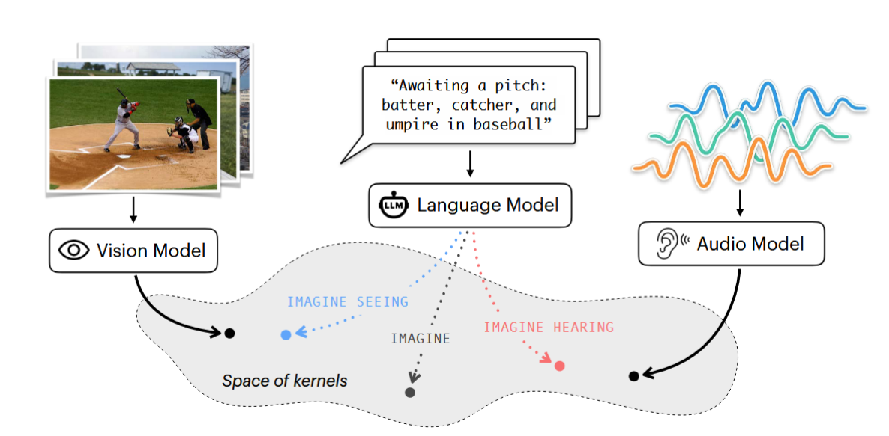

Literature Review: Words That Make Language Models Perceive
This paper investigates the extent to which Large Language Models (LLMs) trained exclusively on text can emulate the internal representations of models trained on sensory data (images and audio). The authors propose that while text-only models lack direct perceptual experience, the linguistic data they are trained on contains implicit multimodal regularities. This work introduces the concept of “generative representations,” suggesting that the act of autoregressive generation allows an LLM to construct a more grounded representation than a static prompt embedding alone.

Figure: Overview of the Sensory Prompting framework. A simple cue asking the model to "see" or "hear" shifts the kernel representation of the LLM closer to that of a specialist vision or audio model.
Key Insights
-
Generative Representations vs. Static Embeddings The authors argue that standard single-pass embeddings (the hidden state of the final prompt token) fail to capture the full extent of an LLM’s latent capabilities. Instead, they introduce “generative representations,” where the model is allowed to autoregressively generate a continuation of the text. The representation is then derived from the average hidden states of this generated sequence. This process allows the model to “reason” and elaborate on the context, creating a geometric structure that aligns significantly better with sensory encoders than static embeddings.
-
Scaling Improves Alignment and Separation There is a clear scaling law effect observed in the results. Larger models (e.g., Qwen3-32B) exhibit much higher alignment with sensory encoders under the appropriate prompts compared to smaller models. Furthermore, as model size increases, the separation between the “visual” and “auditory” projection axes becomes more distinct. In smaller models, the default behavior (no cue) often overlaps heavily with visual framing, whereas larger models show more distinct modality-specific clustering.
Example
Consider the text caption: “Awaiting a pitch: batter, catcher, and umpire in baseball.”
In a standard “no cue” setting, an LLM might continue this text by discussing the rules of baseball or the statistics of the game. The resulting embedding would likely align with general semantic concepts.
However, under the authors’ framework, if the model is prompted with: “Imagine what it would look like to see [caption],” the LLM generates descriptions focusing on stance, uniforms, and physical positioning. The internal representation of this generation shifts to become mathematically similar to how a vision model (like DINOv2) represents an actual image of a baseball game.
Conversely, if prompted with “Imagine what it would sound like to hear [caption],” the model generates text regarding the crack of the bat, the murmur of the crowd, or the umpire’s voice. This shifts the representation toward the geometry of an audio encoder (like BEATs).
Ratings
Novelty: 2.5/5 The concept that text contains sensory information is established, but using generative hidden states to measure alignment with specialist encoders provides a fresh methodological angle.
Clarity: 4/5 The paper is clearly structured, and the distinction between static and generative representations is well-articulated with intuitive visualizations.
Personal Perspective
While this paper presents an interesting empirical study, it essentially represents an early exploration of an idea that feels more like an adaptation of existing prompt engineering techniques rather than a breakthrough in representation learning. The findings, while statistically significant, are somewhat expected given the nature of current Large Language Models. These are statistical models trained on a large corpora of text, including fiction and non-fiction where sensory descriptions are common. If you instruct a model to “see” something, it will generate text that mimics visual description; if you tell it to “smell,” it will likely attempt to describe olfactory sensations (ignoring cases of safety refusals).
The paper’s central claim that “internal representations are implicitly shaped by multimodal regularities” is also a little vague. The analysis relies on the similarity of hidden states (outputs) rather than a mechanistic interrogation of the model’s internals. It is essentially a correlation: prompting for sensory details results in hidden states that look like sensory embeddings. If I ask an LLM to describe what it feels like to fly with wings, it will produce a compelling description of being a bird. This occurs because its training data contains countless descriptions of flight, not because the model possesses a “bird consciousness” or grounded sensorimotor knowledge of aerodynamics. Similarly, the alignment observed here is likely a reflection of the statistical patterns of descriptive language found in the training data, rather than a genuine emergence of cross-modal perception.
Enjoy Reading This Article?
Here are some more articles you might like to read next: